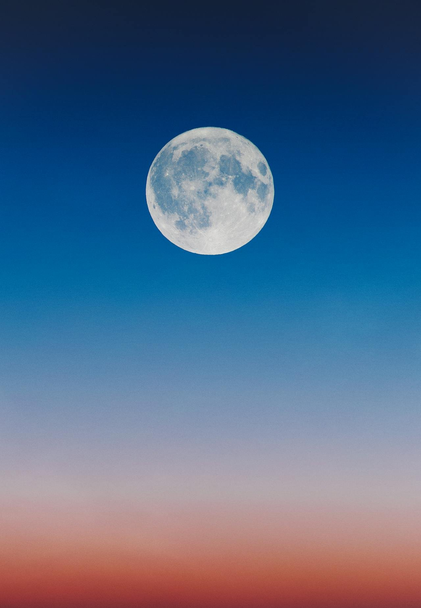

Full Moon Facials: Harnessing Cosmic Energy for Out-of-This-World Radiance

Hadiyah Daché, licensed cosmetologist & esthetician
Skin Care • Face • Self Care
4 min
← All articlesThe Book →At the intersection of cutting-edge skincare science and the timeless rhythms of nature, a fascinating trend is emerging in the beauty world – Full Moon Facials. This innovative approach to skincare draws inspiration from the predictable cycles of the moon, integrating them into a precisely timed treatment regimen. The concept isn't about mysticism, but rather about aligning advanced skincare techniques with the body's natural circadian rhythms, which have long been known to be influenced by lunar phases.
For October, we've developed a unique facial experience that capitalizes on this astronomical-biological connection. Our Full Moon Facial is not just a treatment; it's a scientifically crafted protocol designed to optimize your skin's natural renewal processes. By synchronizing our advanced skincare techniques with the lunar cycle, we aim to enhance the efficacy of our treatments and provide you with measurable, long-lasting results.
This approach is grounded in emerging research on chronobiology – the study of biological rhythms – and its application to dermatology. Recent studies have suggested that skin cell turnover, sebum production, and even the skin's barrier function may fluctuate in patterns that correlate with lunar phases. By tailoring our treatments to these rhythms, we're pioneering a new frontier in personalized skincare.
In the following article, we'll explore the scientific basis for lunar-inspired skincare, detail the components of our Full Moon Facial, and examine the carefully selected ingredients that make this treatment uniquely effective. Join us as we delve into this fascinating fusion of astronomy and advanced skincare science.
The Full Moon's Influence: Bridging Circadian Rhythms and Lunar Cycles
While the science of daily circadian rhythms is well-established, the full moon presents an intriguing additional dimension to our understanding of natural cycles and their potential effects on skin health. The full moon, occurring approximately every 29.5 days, has long captivated human imagination and, more recently, scientific inquiry.
Recent research has begun to shed light on how lunar cycles might influence human biology:
Sleep Patterns: A 2021 study published in Science Advances found that human sleep-wake cycles can be modulated by lunar phases. Participants showed shorter sleep duration and later sleep onset in the days leading up to a full moon, suggesting a potential lunar influence on our internal clocks.
Hormonal Fluctuations: While more research is needed, some studies have suggested that the lunar cycle might influence hormonal balances. A 2005 study in the journal Psychiatry Research found a correlation between lunar phases and cortisol levels, a hormone that can affect skin health.
Melatonin Production: The full moon's increased nocturnal illumination might affect melatonin production, a hormone crucial for regulating sleep and possessing antioxidant properties beneficial for skin.
Our Full Moon Facial has been designed to capitalize on these potential lunar influences while also respecting established circadian science:
Timing: We schedule our Full Moon Facial treatments in the days leading up to and during the full moon. This timing aligns with the period of potentially heightened physiological activity suggested by sleep-cycle studies. The next full moon will be on October 17th and is a Hunter’s Moon.
Enhanced Penetration: Given the possibility of altered sleep patterns and hormonal fluctuations around the full moon, we hypothesize that the skin might be more receptive to treatments during this time. Our facial incorporates deep-cleansing and nourishing steps to take advantage of this potential increased receptivity.
Antioxidant Focus: Recognizing the potential for altered melatonin production during the full moon, our treatment emphasizes antioxidant-rich ingredients to support the skin's natural defense mechanisms.
Circadian-Aware Application: We apply intensive treatments during the facial at times aligning with the skin's circadian rhythms - for example, performing deep exfoliation in the evening when the skin's renewal processes are ramping up.
Our Full Moon Facial combines:
A pumpkin enzyme peel rich in alpha-hydroxy acids, timed to coincide with the skin's evening increase in permeability. The pumpkin's association with the harvest moon makes it a perfect ingredient for our lunar-inspired facial.
Hydration infusion with beta-glucan designed to mimic and maximize the skin's natural moisture balance as well as enhance the skin barrier. Just as the moon's gravitational pull influences the ocean's tides, we view our hydration infusion as a way to optimize the skin's natural moisture "tides." The full moon represents the peak of this cycle, a time when we believe the skin may be most receptive to intense hydration.
An illuminating massage to boost circulation, complementing the heightened physiological activity potentially brought on by the lunar cycle. Our massage also promotes lymphatic drainage. This step helps to reduce puffiness and impart a natural glow to the skin.
A nourishing truffle-infused mask, applied to support the skin's nightly regenerative processes. Truffles, often harvested by the light of the full moon, are rich in amino acids and antioxidants. This indulgent mask helps to nourish the skin, reduce the appearance of fine lines, and impart a luminous finish to your complexion.
While the direct effects of lunar cycles on skin health require further scientific investigation, our Full Moon Facial represents an innovative approach that respects both established circadian science and emerging chronobiological concepts. By aligning our advanced skincare techniques with both daily rhythms and the captivating cycle of the full moon, we aim to provide a treatment that is as effective as it is enthralling.
The Full Moon Facial transcends ordinary skincare, offering an immersive experience that aligns you with cosmic rhythms while delivering tangible skin benefits. This innovative treatment embodies the belief that true beauty emanates from harmony – with oneself, nature, and the universe – providing a moment of celestial-inspired serenity amidst life's daily bustle.
For a limited time, the Full Moon Facial is our featured monthly special. Seize this stellar opportunity to elevate your skincare to cosmic heights and unveil a complexion that truly shines with otherworldly radiance. Book your Full Moon Facial today – spaces are filling up fast for this extraordinary, transformative treatment that's written in the stars!